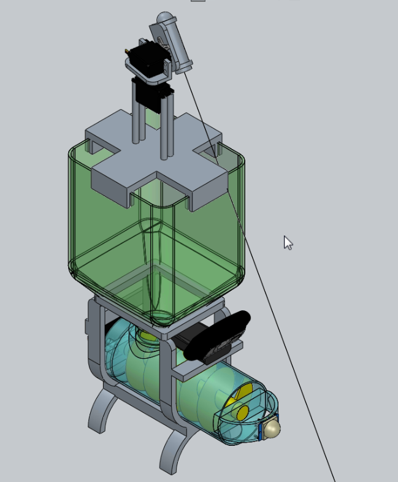

Scanned document ink saver

3D printer for paste (PDMS) ink
Disaster Tweet


| Index | My Bio | Course Works | Experience and Projects | Publications | Contact Me |
Scanned document ink saver |
|
|
3D printer for paste (PDMS) ink |
Disaster Tweet |
|
|
Penn Aerospace Club |
Smart Wheelchair |
|
|  | Catpal: Interactive smart Cat Feeder |